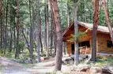
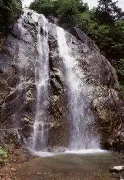
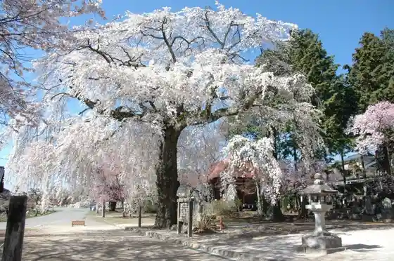
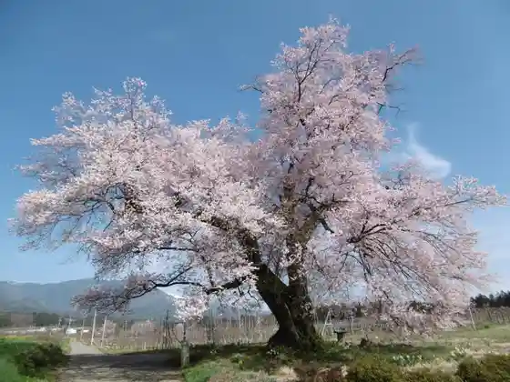
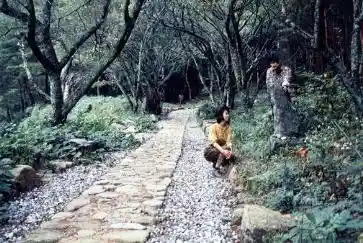

Japan / Nagano / Takamoricho
Takamoricho, Nagano: things to do, food and stays
Takamoricho · Nagano
Takamoricho
Highlighted on the Nagano map.

Sights
Yama no Tera Campground
Takamoricho, Nagano · 0265-35-9406 · Official / source link
Fudo Taki
Takamoricho, Nagano · 0265-35-9405 · Official / source link

Ruri Tera no Shidarezakura
Takamoricho, Nagano · 0265-35-9405 · Official / source link

Nyutabaru Cherry Blossoms
Takamoricho, Nagano · 0265-35-9405 · Official / source link

Tetsugaku no Michi
Takamoricho, Nagano · 0265-35-9405 · Official / source link

Shinshu Takamori Onsen Yugahora
Takamoricho, Nagano · 0265-35-8260 · Official / source link
Shinshu Takamori Onsen Ontai no Kan
Takamoricho, Nagano · 0265-35-8270 · Official / source link
Hongaku Shrine
Takamoricho, Nagano · 0265-35-8211 · Official / source link
Ruri Tera
Takamoricho, Nagano · 0265-35-2209 · Official / source link
Tonari Matsurigoto Tera (Yama no Tera)
Takamoricho, Nagano · 0265-35-5362 · Official / source link